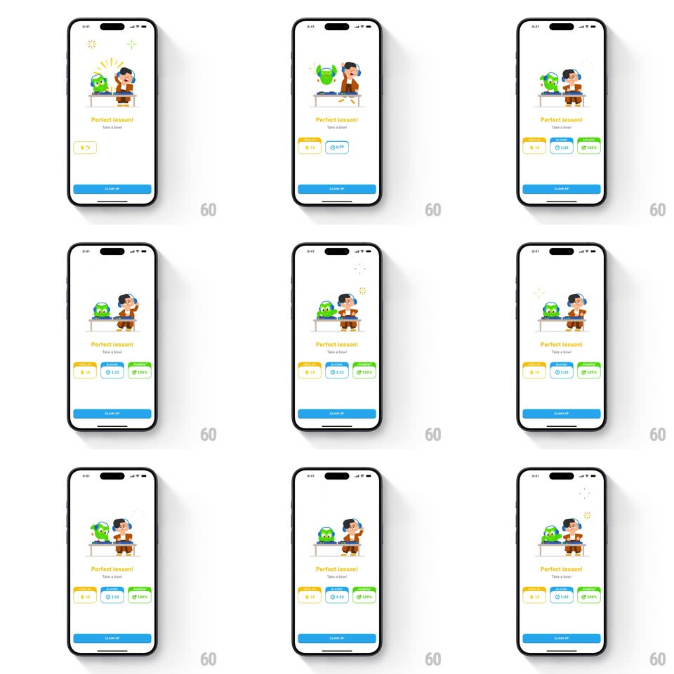

Media
Frame-by-frame

Rebuild this interaction 1:1: Duolingo's perfect-lesson disco variant - Duo and a headphone-wearing character man DJ turntables under springy entrance, sparkles bursting above the decks, then the same three stat cards (XP, time, 100%) pop in below over a CLAIM XP button.

Rebuild this interaction 1:1: Duolingo's perfect-lesson disco variant - Duo and a headphone-wearing character man DJ turntables under springy entrance, sparkles bursting above the decks, then the same three stat cards (XP, time, 100%) pop in below over a CLAIM XP button. ## Integration Integration: stack-agnostic spec - springs given as stiffness/damping, timed motions as duration + curve; map every value to your framework and animation library of choice. ## Scene White celebration screen: Duo and a character behind DJ decks, "Perfect lesson! Take a bow!" copy, three stat cards (yellow XP, blue time, green accuracy), blue CLAIM XP button. ## Motion spec Pattern: DJ-themed staggered celebration. - The DJ setup springs up from the bottom (spring ~300/18, 450ms, solid overshoot) as sparkle bursts fire above the decks (star shapes scale 0 -> 1 -> 0, ~400ms each, repeating at random offsets). - The characters' heads bob to an implied beat (translateY +/-3px, 600ms loop, phase-offset between them); a record on the deck spins slowly (~2s/rev). - Copy fades up (250ms); stat cards pop in left to right (spring ~340/20, 120ms stagger), values counting up. - Sparkles continue idling after the build - the disco never fully stops. - CLAIM XP fades in last (250ms). ## Calibration - The DJ theme replaces the bow - decks, headphones, spinning record all present. - Sparkles are white/yellow line bursts, distinct from confetti. ## Reduced motion Static DJ illustration fades in (250ms); cards fade in staggered; no sparkles. ## Don't miss - The character wears headphones around one ear, hand on the deck - DJ posture, not dancing. - Sparkle bursts repeat at irregular intervals - scheduled-random, not metronomic.